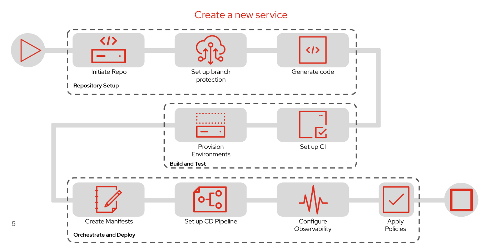

What Happens Behind the Scenes?
In the previous section, you learned that Software Templates, also known as Golden Paths, automate the creation of new projects using organization-approved best practices.
From a developer’s perspective, creating a new application is simple—they select a Software Template, provide a few project details, and click Create.
Behind the scenes, however, Red Hat Developer Hub orchestrates a series of automated tasks that prepare the project for development, deployment, and operations.

The workflow above illustrates how a Software Template automates the complete project bootstrap process.
Repository Setup
The first stage prepares the application’s source repository.
Developer Hub automatically performs tasks such as:
-
Creating a new Git repository.
-
Configuring repository permissions.
-
Applying branch protection policies.
-
Generating the initial application source code from the selected template.
Instead of manually creating repositories and copying starter projects, developers receive a ready-to-use project that already follows organizational standards.
Build and Test
After the repository has been created, the template prepares everything required for continuous integration.
Typical automation includes:
-
Provisioning development and testing environments.
-
Creating Continuous Integration (CI) pipelines.
-
Configuring build automation.
-
Preparing the project for automated testing.
When developers commit their code, the generated pipeline is already available to build, test, and validate the application.
Orchestrate and Deploy
The final stage prepares the application for deployment into Kubernetes.
Software Templates automatically generate deployment resources, including:
-
Kubernetes deployment manifests.
-
Helm charts or Kustomize overlays.
-
Continuous Delivery (CD) pipeline configuration.
-
Observability integrations for logs, metrics, and traces.
-
Organizational security and governance policies.
By the time the template finishes executing, the application is ready to move through the Software Factory using standardized deployment workflows.
End-to-End Automation
Rather than automating only project creation, Software Templates establish the complete foundation for application delivery.
The generated project already includes everything needed to participate in the organization’s Software Factory, including:
-
Source control
-
Continuous Integration
-
Continuous Delivery
-
Deployment manifests
-
Observability
-
Security and governance
As a result, developers can begin implementing business functionality immediately instead of spending time performing repetitive project setup activities.
|
Software Templates are created and maintained by Platform Engineers. As organizational standards evolve, Platform Engineers update the template once, allowing every newly generated application to automatically inherit the latest best practices without requiring developers to manually reconfigure their projects. |
Key Takeaway
A Software Template is much more than a project scaffold.
It automates the complete application onboarding process by provisioning repositories, pipelines, deployment resources, and operational integrations, allowing developers to focus on writing application code while the Software Factory handles the surrounding platform configuration.